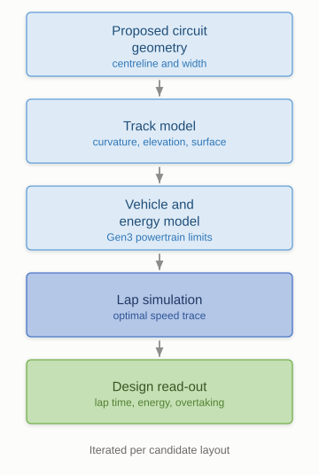

Simulation · Vehicle dynamics
Evaluating circuit layouts before any survey data exists
Formula E races on temporary street circuits. Checking whether a proposed layout will give a good race used to take weeks of manual analysis. It now takes about a day.
The problem
A new Formula E circuit starts as lines on a city map. Before any survey, someone has to decide if it is safe, if the cars can finish on the available energy, and if the racing will be good. These conflict. A safe layout is often processional, and one that rewards overtaking is usually tight where safety is harder.
The analysis was manual and slow. Few layouts were examined properly, and some were dropped on intuition without being tested.

What it does
The tool takes a proposed layout as geometry. It builds a track model, runs it against a vehicle and energy model of the car, and simulates the lap. The output gives the lap time, energy use over a race distance, and where a following car has a realistic chance to overtake.
It only needs the layout geometry, so the team can run it while the design is still cheap to change.
Outcome
Circuit reviews that took weeks of manual work now take a day, including for new venues with no prior data. Because each evaluation is quick, the team now compares several layouts, including ones that were not worth the effort before.
← All projects